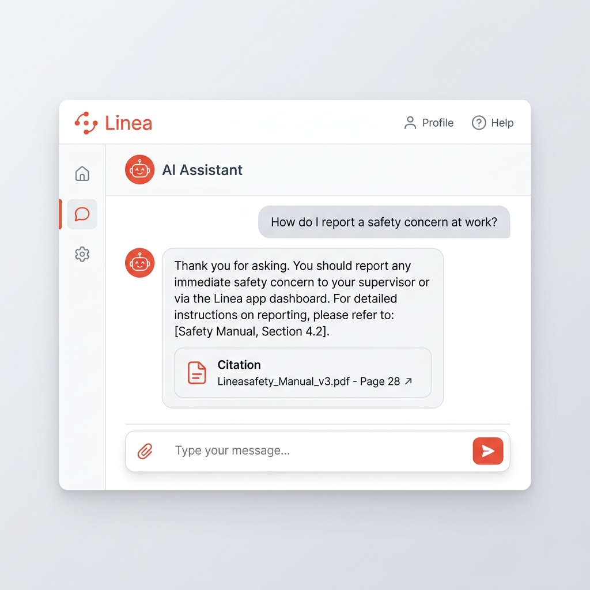

생산 스케줄링은 모든 제조업의 중추입니다. 그러나 기기 점검 누락, 인력 배치 충돌, 규정 해석 오류로 인한 병목 현상은 매년 기업에 막대한 리스크를 제공합니다.
Linea는 데이터를 유기적으로 연결하여 생산 스케줄 수립 시간을 단축하고, 무재해 달성 및 기기 가동 효율 향상을 이끌어냅니다.
스케줄링 수립 속도 향상
설비 중복 배치 오류
안전 수칙 정보 획득률

주문 접수부터 가용 기기 체크, 현장 안전 지침 조회까지 모든 과정이 단 하나의 스케줄링 허브에 동기화됩니다.
Next.js 기반의 드래그 앤 드롭 프론트엔드와 FastAPI 백엔드가 실시간으로 양방향 통신하여 생산 일정을 계획합니다. 월간, 주간, 일간 간트 뷰를 제공하며, 작업 순서 조정 시 백엔드 스케줄 매칭 알고리즘이 동작해 라인 부하를 체크합니다.
공장 관리자나 작업원이 기기의 주의 사항이나 가동 매뉴얼을 찾아보느라 일정을 지연시킬 필요가 없습니다. R2 스토리지에 지침 PDF 파일을 올리는 즉시 백엔드에서 텍스트를 청킹(Chunking) 및 임베딩 처리하여 Vector DB에 동기화합니다.
일정 배정 단계에서 해당 공정을 가동하기 위해 필수적으로 갖춰야 할 인력 자격 스펙을 분석합니다. 독성 화학 가스 주입 라인이나 고전압 설비 등 특수 라인에 미인증 작업자나 교육 미이수 근로자가 배치되지 않도록 방어 로직이 구동됩니다.
모든 양산 기기의 작동 모드(가동 중, 유휴, 수리 중, 점검 필요)와 사전에 정의된 예방 보수(PM) 정기 점검일을 데이터베이스에서 통합 관리합니다. 일정을 짜는 도중 점검일이 도래하거나 경과된 장비가 감지되면, 해당 슬롯의 작업 배치를 불허합니다.
생산 계획 수립부터 AI 협업까지, 스마트 공장 운영을 위한 핵심 가이드
FastAPI 백엔드의 AI 스케줄링 최적화 엔진을 통해 자동으로 생산 일정을 배정하고 Gantt 차트 상에 시각화합니다.
반도체 건식 식각기(Dry Etcher) 등 주요 설비의 가동 이력 및 건전성을 추적하고 예방 정비 계획을 연동합니다.
특수 위험 공정에 적합한 자격을 갖춘 작업원을 안전하게 배정하고 인력 배치 충돌을 사전에 차단합니다.
사내 안전 수칙 및 설비 조작 매뉴얼 PDF를 기반으로 한 지능형 Q&A 어시스턴트를 활용합니다.
실제 Linea 애플리케이션의 핵심 기능을 웹에서 미리 경험해 보세요.
우리 공장 라인과 장비 대수, 교대 근무 Roster에 최적화된 맞춤형 솔루션을 검토해 드립니다.
아래 연락처 혹은 문의 양식을 통해 궁금한 점을 공유해 주세요.